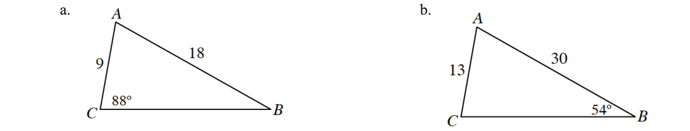
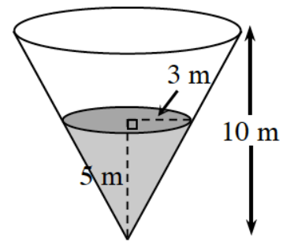

Let \(f(x)=x^2+2x-1\).
Evaluate and simplify \(\frac{f(5+h)-f(5)}{(5+h)-5}\).
Explain what your answer represents on the graph of \(y=f(x)\).
Let \(g(x)=\frac{10}{x}\).
Calculate the average rate of change of \(g(x)\) from \(x=5\) to \(x=6\).
Write the expression for the average rate of change of \(g(x)\) from \(x=5\) to \(x=5+h\).
Evaluate your expression from part (b) as \(h\to 0\).
Use a graph or a table to evaluate each of the following limits.
\(\lim_{x\to 3}(x^2-9)\)
\(\lim_{x\to 2}\frac{x^2-4}{x-2}\)
\(\lim_{x\to 7^-}\frac{1}{x-7}\)
\(\lim_{x\to 7^+}\frac{1}{x-7}\)
Sketch a graph of \(f(x)=\frac{1}{-x+2}+2\). Then evaluate \(\lim_{x\to -\infty} f(x)\).
Graph \(r(x)=\frac{x^2+10x+24}{x+4}\). State the location(s) of any discontinuities (asymptotes and holes).
Solve each triangle below.

The amount of water evaporating from a conical container varies directly with the exposed surface area (circular region) of the water in the cone. The height of the cone is \(10\) meters. When the height of the water is \(3\) meters, the radius of the exposed circular region is \(1\) meter. At this point, water is evaporating at a rate of \(0.2\) liters per hour.

How fast is the water evaporating when the cone is full?
How fast is the water evaporating when it is half full? (Reminder \(V=\frac{1}{3}\pi r^2h\).)
This problem is a checkpoint for solving equations with exponents. Solve each of the following equations.
\(8\cdot 4^x=\frac{1}{\sqrt{2^x}}\)
\((x+\sqrt{5})^6=32\)
\(6^{x-1}=35\)